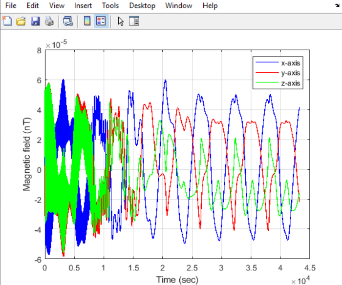

KNACKSAT-3: attitude determination and detumbling
TRIAD attitude determination and B-dot magnetorquer control for detumbling a 1U CubeSat in low Earth orbit.
- Advisor
- Dr. Phongsatorn Saisutjarit
- Institution
- Mechanical and Aerospace Engineering, King Mongkut's University of Technology North Bangkok
- Role
- ADCS research assistant
- Period
- Summer 2024
- Tools
- MATLAB, Simulink, Aerospace Toolbox
Overview
During the summer of my freshman year, I worked with Dr. Saisutjarit on KnackSat 3, the first CubeSat fully designed and built by Thai undergraduate students. I simulated magnetic detumbling in MATLAB to tune the B-dot control gain before deploying the software on the flight computer.
Approach
- Orbit and environment. Propagated a low Earth orbit from Keplerian elements in the Earth-centered inertial frame, solving Kepler's equation with Newton-Raphson iteration and modeling J2 precession of RAAN and argument of perigee.
- Magnetic-field and attitude model. Computed the IGRF field with
igrfmagm, transformed it into the body frame with a quaternion-derived direction cosine matrix, and modeled angular velocity, scalar-first quaternions, Euler angles, and Euler's rotational equations. - B-dot control. Implemented the magnetorquer law with coil current, magnetic dipole moment, actuator saturation, and magnetic control torque, then integrated the attitude state with a fourth-order Runge-Kutta method.
- Disturbance framework. Included gravity-gradient, atmospheric-drag, solar-radiation-pressure, and residual magnetic-dipole torque models.
- Analysis. Generated orbital, magnetic-field, angular-velocity, quaternion, Euler-angle, and magnetorquer-current plots plus a 3D attitude visualization using MATLAB Aerospace Toolbox functions.
Results


